CODING AGENTS AS PIXEL WORLD MODELS
traex/GPT-6.1-Sol · 0074
点击播放 · 原生 RGB 像素
逐轮保存的候选
回放视频、检查图与代码变化。
每份候选均可单独播放。实际图片检查记录在下方工具轨迹中。
候选 01播放与检查图
点击播放 · 原生 RGB 像素

展开代码变化
--- 上一保存版本
+++ 本次保存版本
@@ -0,0 +1,187 @@
+from pathlib import Path
+import numpy as np
+from PIL import Image, ImageDraw, ImageFilter
+import cv2
+from scipy.spatial import ConvexHull
+from artifact_io import save
+
+ROOT=Path(__file__).resolve().parent
+W,H=256,144
+S=4
+img=np.array(Image.open(ROOT/'first_frame.png').convert('RGB'))
+f=img.astype(np.float32)
+# Recover the stationary wall behind the tall shadow by interpolating its
+# smoothly lit surface, retaining small scale photographic texture.
+bg=f.copy()
+for y in range(56,100):
+ lo=np.mean(f[y,99:103],axis=0)
+ hi=np.mean(f[y,121:125],axis=0)
+ for x in range(103,121):
+ t=(x-100.5)/22.
+ bg[y,x]=lo*(1-t)+hi*t
+# Soft source shadow attenuation. It includes the warm ambient light inside
+# the shadow, its optical penumbra, and the original camera texture.
+shadow_diff=np.zeros_like(f)
+shadow_diff[56:100,103:121]=f[56:100,103:121]-bg[56:100,103:121]
+# Restore the area occupied by the block and its reflection. Wall, tabletop,
+# and turntable remain separate fixed surfaces.
+for y in range(96,134):
+ for x in range(143,157):
+ if y<=97:
+ t=(x-142)/15
+ col=f[y,142]*(1-t)+f[y,157]*t
+ elif y<=108:
+ # Rounded right edge of the turntable's horizontal wall shadow.
+ t=1/(1+np.exp(-(x-151.0)/.75))
+ col=f[y,142]*(1-t)+f[y,157]*t
+ else:
+ t=(x-141)/17
+ col=f[y,141]*(1-t)+f[y,158]*t
+ ellipse=((x-147.6)/26.5)**2+((y-123.6)/9.35)**2
+ if y>=114 and ellipse<.98:
+ col=np.array([65.7,65.,69.3])
+ bg[y,x]=col
+# No edit outside the moving block/shadow/reflection regions.
+
+cx,cy=147.8,124.2
+k=np.sqrt(.7/(7.1*1.8))
+th0=-np.arctan(1/(k*7.1))
+width=np.hypot(7.1,1/k)
+depth=np.hypot(1.8,.7/k)
+height=25.7
+O=np.array([1.75,.85/k,0.])
+L=np.array([86.,-230.,0.])
+D=(cy-98.6)/k
+
+def points(angle):
+ # Positive angular motion is clockwise when viewed from above.
+ a=th0-angle
+ u=np.array([np.cos(a),np.sin(a),0.])
+ v=np.array([-np.sin(a),np.cos(a),0.])
+ c=np.array([O[0]*np.cos(angle)+O[1]*np.sin(angle),
+ -O[0]*np.sin(angle)+O[1]*np.cos(angle),0.])
+ p=np.array([c+width*u*s/2+depth*v*t/2+[0,0,height*z]
+ for z in [0,1] for s,t in [(-1,-1),(1,-1),(1,1),(-1,1)]])
+ return p,u,v
+
+def project(p, reflection=False):
+ z=p[:,2]*(-.37 if reflection else 1)
+ return np.stack([cx+p[:,0],cy-k*p[:,1]-z],axis=1)
+
+def wall_points(p):
+ q=L+(p-L)*((D-L[1])/(p[:,1]-L[1]))[:,None]
+ return project(q)
+
+p0,u0,v0=points(0)
+s0=wall_points(p0)
+s0left,s0right=s0[:,0].min(),s0[:,0].max()
+s0top=s0[:,1].min()
+# Photographic calibration of the shadow, leaving the optics fixed thereafter.
+shadow_left,shadow_right,shadow_top,shadow_bottom=104.7,118.1,60.6,98.6
+shadow_xscale=(shadow_right-shadow_left)/(s0right-s0left)
+shadow_yscale=(shadow_bottom-shadow_top)/(98.6-s0top)
+
+def new_shadow(angle):
+ p,_,_=points(angle)
+ s=wall_points(p)
+ left=shadow_left+(s[:,0].min()-s0left)*shadow_xscale
+ right=shadow_left+(s[:,0].max()-s0left)*shadow_xscale
+ top=shadow_bottom-(98.6-s[:,1].min())*shadow_yscale
+ # Warp the measured soft shadow, rather than replacing it with a flat black
+ # drawing, for a consistent real-world spotlight image.
+ sx=(right-left)/(shadow_right-shadow_left)
+ sy=(shadow_bottom-top)/(shadow_bottom-shadow_top)
+ M=np.array([[sx,0,left-sx*shadow_left],[0,sy,shadow_bottom*(1-sy)]],np.float32)
+ return cv2.warpAffine(shadow_diff,M,(W,H),flags=cv2.INTER_LINEAR,
+ borderMode=cv2.BORDER_CONSTANT)
+
+# A photographic face texture from the visible blue face of the first frame.
+src=np.array([[145.5,99.1],[151.1,99.9],[151.1,122.9],[145.5,122.1]],np.float32)
+dst=np.array([[0,0],[63,0],[63,239],[0,239]],np.float32)
+tex=cv2.warpPerspective(f,cv2.getPerspectiveTransform(src,dst),(64,240))
+# Slightly desaturate the narrow original sheen so no fabricated stripes appear.
+light=np.array([.35,-.937,0])
+front0=max(0,float(np.dot(-v0,light)))
+
+
+def poly_mask(coords,blur=.0):
+ im=Image.new('L',(W*S,H*S))
+ ImageDraw.Draw(im).polygon([(float(x*S),float(y*S)) for x,y in coords],fill=255)
+ if blur: im=im.filter(ImageFilter.GaussianBlur(blur*S))
+ return np.asarray(im,dtype=np.float32)/255
+
+Y,X=np.mgrid[0:H*S,0:W*S].astype(np.float32)
+X=(X+.5)/S;Y=(Y+.5)/S
+ellipse=((X-147.6)/26.5)**2+((Y-123.6)/9.35)**2
+
+def face_layer(corners,normal,reflected=False):
+ # corners ordered left top / right top / right bottom / left bottom
+ d=max(0,float(np.dot(normal,light)))
+ factor=np.array([(20+55*d*d)/(20+55*front0*front0),
+ (44+205*d)/(44+205*front0),
+ (135+158*d)/(135+158*front0)],np.float32)
+ if reflected:
+ texture=tex*np.array([.14,.37,.44],np.float32)*factor
+ else:
+ texture=tex*factor
+ texture=np.clip(texture,0,252)
+ dest=np.array(corners,np.float32)*S
+ M=cv2.getPerspectiveTransform(dst,dest)
+ warped=cv2.warpPerspective(texture,M,(W*S,H*S),flags=cv2.INTER_LINEAR,
+ borderMode=cv2.BORDER_REPLICATE)
+ mask=poly_mask(corners)
+ if reflected:
+ mask*=np.clip((1-ellipse)*13,0,1)
+ mask*=np.clip(.97-(Y-124)*.036,.45,.98)
+ return warped,mask
+
+faces=[(0,1,-1,'v'),(1,2,1,'u'),(2,3,1,'v'),(3,0,-1,'u')]
+
+def object_render(angle,background):
+ p,u,v=points(angle)
+ pr=project(p)
+ out=cv2.resize(background,(W*S,H*S),interpolation=cv2.INTER_CUBIC)
+ # Reflection on the dark polished platter is attached to the rotating block.
+ r=project(p,True)
+ for i,j,sign,axis in faces:
+ n=sign*(u if axis=='u' else v)
+ if n[1]<-.001:
+ coords=[r[i],r[j],r[j+4],r[i+4]]
+ layer,mask=face_layer(coords,n,True)
+ mask=cv2.GaussianBlur(mask,(0,0),.45*S)
+ out=out*(1-mask[...,None])+layer*mask[...,None]
+ # Small contact shadow is stable at the block's foot.
+ contact=poly_mask(pr[:4],.32)*.16
+ out*=1-contact[...,None]
+ for i,j,sign,axis in faces:
+ n=sign*(u if axis=='u' else v)
+ if n[1]<-.001:
+ coords=[pr[i+4],pr[j+4],pr[j],pr[i]]
+ layer,mask=face_layer(coords,n)
+ out=out*(1-mask[...,None])+layer*mask[...,None]
+ top=poly_mask(pr[4:])
+ topcolor=np.array([39,40,48],np.float32)
+ out=out*(1-top[...,None])+topcolor*top[...,None]
+ # The tiny corner bevel catches the spotlight, as it does in the source.
+ rim=Image.new('L',(W*S,H*S));dr=ImageDraw.Draw(rim)
+ for i in range(4):
+ prev=(i-1)%4
+ a=faces[i];b=faces[prev]
+ na=a[2]*(u if a[3]=='u' else v)
+ nb=b[2]*(u if b[3]=='u' else v)
+ if na[1]<0 and nb[1]<0:
+ dr.line([tuple(pr[i+4]*S),tuple(pr[i]*S)],fill=150,width=1)
+ bm=np.asarray(rim,np.float32)/255
+ out=out*(1-bm[...,None]*.5)+np.array([102,223,249])*bm[...,None]*.5
+ out=cv2.GaussianBlur(out,(0,0),.18*S)
+ return cv2.resize(out,(W,H),interpolation=cv2.INTER_AREA)
+
+frames=[img.copy()]
+for index in range(1,20):
+ t=index/4
+ angle=np.deg2rad(40)*t
+ background=np.clip(bg+new_shadow(angle),0,255)
+ out=object_render(angle,background)
+ frames.append(np.clip(np.rint(out),0,255).astype(np.uint8))
+frames=np.stack(frames)
+save(frames,ROOT)
候选 02播放与检查图
点击播放 · 原生 RGB 像素

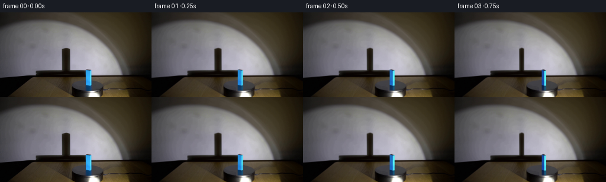
展开代码变化
--- 上一保存版本
+++ 本次保存版本
@@ -100,7 +100,7 @@
dst=np.array([[0,0],[63,0],[63,239],[0,239]],np.float32)
tex=cv2.warpPerspective(f,cv2.getPerspectiveTransform(src,dst),(64,240))
# Slightly desaturate the narrow original sheen so no fabricated stripes appear.
-light=np.array([.35,-.937,0])
+light=np.array([.48,-.8773,0])
front0=max(0,float(np.dot(-v0,light)))
@@ -118,8 +118,8 @@
# corners ordered left top / right top / right bottom / left bottom
d=max(0,float(np.dot(normal,light)))
factor=np.array([(20+55*d*d)/(20+55*front0*front0),
- (44+205*d)/(44+205*front0),
- (135+158*d)/(135+158*front0)],np.float32)
+ (95+155*d)/(95+155*front0),
+ (165+110*d)/(165+110*front0)],np.float32)
if reflected:
texture=tex*np.array([.14,.37,.44],np.float32)*factor
else:
@@ -141,6 +141,7 @@
p,u,v=points(angle)
pr=project(p)
out=cv2.resize(background,(W*S,H*S),interpolation=cv2.INTER_CUBIC)
+ untouched=out.copy()
# Reflection on the dark polished platter is attached to the rotating block.
r=project(p,True)
for i,j,sign,axis in faces:
@@ -148,8 +149,9 @@
if n[1]<-.001:
coords=[r[i],r[j],r[j+4],r[i+4]]
layer,mask=face_layer(coords,n,True)
- mask=cv2.GaussianBlur(mask,(0,0),.45*S)
- out=out*(1-mask[...,None])+layer*mask[...,None]
+ premult=cv2.GaussianBlur(layer*mask[...,None],(0,0),.3*S)
+ mask=cv2.GaussianBlur(mask,(0,0),.3*S)
+ out=out*(1-mask[...,None])+premult
# Small contact shadow is stable at the block's foot.
contact=poly_mask(pr[:4],.32)*.16
out*=1-contact[...,None]
@@ -174,7 +176,9 @@
bm=np.asarray(rim,np.float32)/255
out=out*(1-bm[...,None]*.5)+np.array([102,223,249])*bm[...,None]*.5
out=cv2.GaussianBlur(out,(0,0),.18*S)
- return cv2.resize(out,(W,H),interpolation=cv2.INTER_AREA)
+ untouched=cv2.GaussianBlur(untouched,(0,0),.18*S)
+ delta=cv2.resize(out-untouched,(W,H),interpolation=cv2.INTER_AREA)
+ return background+delta
frames=[img.copy()]
for index in range(1,20):
候选 03播放与检查图
候选 04播放与检查图
点击播放 · 原生 RGB 像素
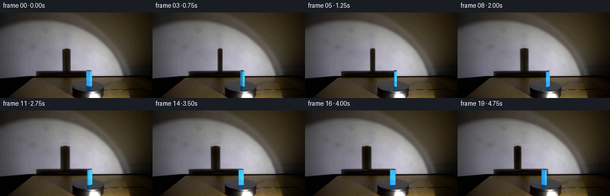
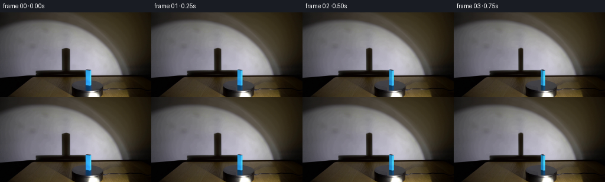
展开代码变化
--- 上一保存版本
+++ 本次保存版本
@@ -117,8 +117,8 @@
def face_layer(corners,normal,reflected=False):
# corners ordered left top / right top / right bottom / left bottom
d=max(0,float(np.dot(normal,light)))
- factor=np.array([(20+55*d*d)/(20+55*front0*front0),
- (95+155*d)/(95+155*front0),
+ factor=np.array([(30+36*d)/(30+36*front0),
+ (135+75*d)/(135+75*front0),
(165+110*d)/(165+110*front0)],np.float32)
if reflected:
texture=tex*np.array([.14,.37,.44],np.float32)*factor
可观测工具轨迹
实际执行的命令与返回图片。
命令 1exit 0
/bin/bash -lc "ls -la && cat prompt.txt && printf '\\n---RULES---\\n' && cat GENERATION_RULES.md"
命令 2exit 0
/bin/bash -lc "cat artifact_io.py && python - <<'PY'
from PIL import Image
im=Image.open('first_frame.png'); print(im.size); im.resize((1024,576)).save('.tmp/first_large.png')
PY"命令 3exit 0
/bin/bash -lc "python - <<'PY'
from PIL import Image
im=Image.open('first_frame.png'); im.crop((96,54,179,144)).resize((664,720)).save('.tmp/detail.png')
PY"命令 4exit 0
/bin/bash -lc "python - <<'PY'
from PIL import Image
import numpy as np
im=np.array(Image.open('first_frame.png'))
for y in [58,60,61,62,63,65,95,97,98,99,100,102,105,108,110,112,120,124,125,126,128,130,132,134,136]:
xs= list(range(101,122)) if y<95 else list(range(139,160))
print(y, [(x,tuple(im[y,x])) for x in xs])
PY"命令 5exit 0
/bin/bash -lc "python - <<'PY'
import cv2, numpy as np
from PIL import Image
im=np.array(Image.open('first_frame.png'))
print('cv2',cv2.__version__)
for y in range(94,118):
print(y, ' '.join(f'{int(im[y,x].mean()):3}' for x in range(137,169)))
PY"命令 6exit 0
/bin/bash -lc "cat > .tmp/geometry_test.py <<'PY'
import numpy as np
from scipy.spatial import ConvexHull
cx,cy=147.8,124.3
k=.33
w,d,h=7.8,3.3,25.8
th=-np.deg2rad(23)
O=np.array([1.7,1.7,0.])
U=np.array([np.cos(th),np.sin(th),0])*w
V=np.array([-np.sin(th),np.cos(th),0])*d
p=np.array([O+U*a/2+V*b/2+[0,0,h*c] for c in [0,1] for a,b in [(-1,-1),(1,-1),(1,1),(-1,1)]])
def project(p): return np.stack([cx+p[:,0],cy-k*p[:,1]-p[:,2]],1)
print('block',project(p))
L=np.array([83.,-165.,0])
D=81
q=L+(p-L)*((D-L[1])/(p[:,1]-L[1]))[:,None]
s=project(q)
print('shadow',s)
print('hull',s[ConvexHull(s).vertices])
PY
python .tmp/geometry_test.py"命令 7exit 0
/bin/bash -lc "python - <<'PY'
import numpy as np
from PIL import Image
im=np.array(Image.open('first_frame.png'))
for y in [66,75,90,95,96,97,98,99,100]:
print(y,[(x, im[y,x].tolist()) for x in [99,100,101,102,103,104,105,106,108,110,112,114,116,117,118,119,120,121,122,123]])
PY"命令 8exit 0
/bin/bash -lc "python - <<'PY'
import cv2,numpy as np
from PIL import Image
im=np.array(Image.open('first_frame.png'))
m=np.zeros(im.shape[:2],np.uint8); m[96:127,143:156]=255
b=cv2.inpaint(im,m,4,cv2.INPAINT_TELEA)
# Reflection use interpolation top disk bands
for y in range(124,134):
for x in range(142,157):
t=(x-141)/16
b[y,x]=im[y,141]*(1-t)+im[y,157]*t
Image.fromarray(b).resize((1024,576)).save('.tmp/background_try.png')
PY"命令 9exit 0
/bin/bash -lc "cat > generate.py <<'PY'
from pathlib import Path
import numpy as np
from PIL import Image, ImageDraw, ImageFilter
import cv2
from scipy.spatial import ConvexHull
from artifact_io import save
ROOT=Path(__file__).resolve().parent
W,H=256,144
S=4
img=np.array(Image.open(ROOT/'first_frame.png').convert('RGB'))
f=img.astype(np.float32)
# Recover the stationary wall behind the tall shadow by interpolating its
# smoothly lit surface, retaining small scale photographic texture.
bg=f.copy()
for y in range(56,100):
lo=np.mean(f[y,99:103],axis=0)
hi=np.mean(f[y,121:125],axis=0)
for x in range(103,121):
t=(x-100.5)/22.
bg[y,x]=lo*(1-t)+hi*t
# Soft source shadow attenuation. It includes the warm ambient light inside
# the shadow, its optical penumbra, and the original camera texture.
shadow_diff=np.zeros_like(f)
shadow_diff[56:100,103:121]=f[56:100,103:121]-bg[56:100,103:121]
# Restore the area occupied by the block and its reflection. Wall, tabletop,
# and turntable remain separate fixed surfaces.
for y in range(96,134):
for x in range(143,157):
if y<=97:
t=(x-142)/15
col=f[y,142]*(1-t)+f[y,157]*t
elif y<=108:
# Rounded right edge of the turntable's horizontal wall shadow.
t=1/(1+np.exp(-(x-151.0)/.75))
col=f[y,142]*(1-t)+f[y,157]*t
else:
t=(x-141)/17
col=f[y,141]*(1-t)+f[y,158]*t
ellipse=((x-147.6)/26.5)**2+((y-123.6)/9.35)**2
if y>=114 and ellipse<.98:
col=np.array([65.7,65.,69.3])
bg[y,x]=col
# No edit outside the moving block/shadow/reflection regions.
cx,cy=147.8,124.2
k=np.sqrt(.7/(7.1*1.8))
th0=-np.arctan(1/(k*7.1))
width=np.hypot(7.1,1/k)
depth=np.hypot(1.8,.7/k)
height=25.7
O=np.array([1.75,.85/k,0.])
L=np.array([86.,-230.,0.])
D=(cy-98.6)/k
def points(angle):
# Positive angular motion is clockwise when viewed from above.
a=th0-angle
u=np.array([np.cos(a),np.sin(a),0.])
v=np.array([-np.sin(a),np.cos(a),0.])
c=np.array([O[0]*np.cos(angle)+O[1]*np.sin(angle),
-O[0]*np.sin(angle)+O[1]*np.cos(angle),0.])
p=np.array([c+width*u*s/2+depth*v*t/2+[0,0,height*z]
for z in [0,1] for s,t in [(-1,-1),(1,-1),(1,1),(-1,1)]])
return p,u,v
def project(p, reflection=False):
z=p[:,2]*(-.37 if reflection else 1)
return np.stack([cx+p[:,0],cy-k*p[:,1]-z],axis=1)
def wall_points(p):
q=L+(p-L)*((D-L[1])/(p[:,1]-L[1]))[:,None]
return project(q)
p0,u0,v0=points(0)
s0=wall_points(p0)
s0left,s0right=s0[:,0].min(),s0[:,0].max()
s0top=s0[:,1].min()
# Photographic calibration of the shadow, leaving the optics fixed thereafter.
shadow_left,shadow_right,shadow_top,shadow_bottom=104.7,118.1,60.6,98.6
shadow_xscale=(shadow_right-shadow_left)/(s0right-s0left)
shadow_yscale=(shadow_bottom-shadow_top)/(98.6-s0top)
def new_shadow(angle):
p,_,_=points(angle)
s=wall_points(p)
left=shadow_left+(s[:,0].min()-s0left)*shadow_xscale
right=shadow_left+(s[:,0].max()-s0left)*shadow_xscale
top=shadow_bottom-(98.6-s[:,1].min())*shadow_yscale
# Warp the measured soft shadow, rather than replacing it with a flat black
# drawing, for a consistent real-world spotlight image.
sx=(right-left)/(shadow_right-shadow_left)
sy=(shadow_bottom-top)/(shadow_bottom-shadow_top)
M=np.array([[sx,0,left-sx*shadow_left],[0,sy,shadow_bottom*(1-sy)]],np.float32)
return cv2.warpAffine(shadow_diff,M,(W,H),flags=cv2.INTER_LINEAR,
borderMode=cv2.BORDER_CONSTANT)
# A photographic face texture from the visible blue face of the first frame.
src=np.array([[145.5,99.1],[151.1,99.9],[151.1,122.9],[145.5,122.1]],np.float32)
dst=np.array([[0,0],[63,0],[63,239],[0,239]],np.float32)
tex=cv2.warpPerspective(f,cv2.getPerspectiveTransform(src,dst),(64,240))
# Slightly desaturate the narrow original sheen so no fabricated stripes appear.
light=np.array([.35,-.937,0])
front0=max(0,float(np.dot(-v0,light)))
def poly_mask(coords,blur=.0):
im=Image.new('L',(W*S,H*S))
ImageDraw.Draw(im).polygon([(float(x*S),float(y*S)) for x,y in coords],fill=255)
if blur: im=im.filter(ImageFilter.GaussianBlur(blur*S))
return np.asarray(im,dtype=np.float32)/255
Y,X=np.mgrid[0:H*S,0:W*S].astype(np.float32)
X=(X+.5)/S;Y=(Y+.5)/S
ellipse=((X-147.6)/26.5)**2+((Y-123.6)/9.35)**2
def face_layer(corners,normal,reflected=False):
# corners ordered left top / right top / right bottom / left bottom
d=max(0,float(np.dot(normal,light)))
factor=np.array([(20+55*d*d)/(20+55*front0*front0),
(44+205*d)/(44+205*front0),
(135+158*d)/(135+158*front0)],np.float32)
if reflected:
texture=tex*np.array([.14,.37,.44],np.float32)*factor
else:
texture=tex*factor
texture=np.clip(texture,0,252)
dest=np.array(corners,np.float32)*S
M=cv2.getPerspectiveTransform(dst,dest)
warped=cv2.warpPerspective(texture,M,(W*S,H*S),flags=cv2.INTER_LINEAR,
borderMode=cv2.BORDER_REPLICATE)
mask=poly_mask(corners)
if reflected:
mask*=np.clip((1-ellipse)*13,0,1)
mask*=np.clip(.97-(Y-124)*.036,.45,.98)
return warped,mask
faces=[(0,1,-1,'v'),(1,2,1,'u'),(2,3,1,'v'),(3,0,-1,'u')]
def object_render(angle,background):
p,u,v=points(angle)
pr=project(p)
out=cv2.resize(background,(W*S,H*S),interpolation=cv2.INTER_CUBIC)
# Reflection on the dark polished platter is attached to the rotating block.
r=project(p,True)
for i,j,sign,axis in faces:
n=sign*(u if axis=='u' else v)
if n[1]<-.001:
coords=[r[i],r[j],r[j+4],r[i+4]]
layer,mask=face_layer(coords,n,True)
mask=cv2.GaussianBlur(mask,(0,0),.45*S)
out=out*(1-mask[...,None])+layer*mask[...,None]
# Small contact shadow is stable at the block's foot.
contact=poly_mask(pr[:4],.32)*.16
out*=1-contact[...,None]
for i,j,sign,axis in faces:
n=sign*(u if axis=='u' else v)
if n[1]<-.001:
coords=[pr[i+4],pr[j+4],pr[j],pr[i]]
layer,mask=face_layer(coords,n)
out=out*(1-mask[...,None])+layer*mask[...,None]
top=poly_mask(pr[4:])
topcolor=np.array([39,40,48],np.float32)
out=out*(1-top[...,None])+topcolor*top[...,None]
# The tiny corner bevel catches the spotlight, as it does in the source.
rim=Image.new('L',(W*S,H*S));dr=ImageDraw.Draw(rim)
for i in range(4):
prev=(i-1)%4
a=faces[i];b=faces[prev]
na=a[2]*(u if a[3]=='u' else v)
nb=b[2]*(u if b[3]=='u' else v)
if na[1]<0 and nb[1]<0:
dr.line([tuple(pr[i+4]*S),tuple(pr[i]*S)],fill=150,width=1)
bm=np.asarray(rim,np.float32)/255
out=out*(1-bm[...,None]*.5)+np.array([102,223,249])*bm[...,None]*.5
out=cv2.GaussianBlur(out,(0,0),.18*S)
return cv2.resize(out,(W,H),interpolation=cv2.INTER_AREA)
frames=[img.copy()]
for index in range(1,20):
t=index/4
angle=np.deg2rad(40)*t
background=np.clip(bg+new_shadow(angle),0,255)
out=object_render(angle,background)
frames.append(np.clip(np.rint(out),0,255).astype(np.uint8))
frames=np.stack(frames)
save(frames,ROOT)
PY
python generate.py"命令 10exit 0
/bin/bash -lc "python - <<'PY'
from PIL import Image
Image.open('transition_check.png').resize((1536,463)).save('.tmp/trans_large.png')
Image.open('frames/06.png').resize((1024,576)).save('.tmp/frame6.png')
Image.open('frames/14.png').resize((1024,576)).save('.tmp/frame14.png')
PY"命令 11exit 0
/bin/bash -lc "python - <<'PY'
exec(open('generate.py').read().split('frames=[img.copy()]')[0])
print('k th w d',k,th0*180/np.pi,width,depth,'front',front0)
print('texmean',tex.mean((0,1)))
for a in [0,10,30,50,70,110,140,190]:
p,u,v=points(np.deg2rad(a));print(a,project(p).min(0),project(p).max(0),[(name,sign, n[1],np.dot(n,light)) for i,j,sign,name in faces for n in [sign*(u if name=='u' else v)] if n[1]<0])
Image.fromarray(np.clip(object_render(0,np.clip(bg+new_shadow(0),0,255)),0,255).astype(np.uint8)).resize((1024,576)).save('.tmp/renderzero.png')
PY"命令 12exit 0
/bin/bash -lc "cp inspection.png .tmp/inspection_v1.png && python - <<'PY'
p='generate.py'
s=open(p).read().replace('light=np.array([.35,-.937,0])','light=np.array([.48,-.8773,0])')
s=s.replace('(44+205*d)/(44+205*front0)', '(95+155*d)/(95+155*front0)')
s=s.replace('(135+158*d)/(135+158*front0)', '(165+110*d)/(165+110*front0)')
s=s.replace('out=cv2.resize(background,(W*S,H*S),interpolation=cv2.INTER_CUBIC)', 'out=cv2.resize(background,(W*S,H*S),interpolation=cv2.INTER_CUBIC)\\n untouched=out.copy()')
s=s.replace('mask=cv2.GaussianBlur(mask,(0,0),.45*S)\\n out=out*(1-mask[...,None])+layer*mask[...,None]', 'premult=cv2.GaussianBlur(layer*mask[...,None],(0,0),.3*S)\\n mask=cv2.GaussianBlur(mask,(0,0),.3*S)\\n out=out*(1-mask[...,None])+premult')
s=s.replace('return cv2.resize(out,(W,H),interpolation=cv2.INTER_AREA)', 'untouched=cv2.GaussianBlur(untouched,(0,0),.18*S)\\n delta=cv2.resize(out-untouched,(W,H),interpolation=cv2.INTER_AREA)\\n return background+delta')
open(p,'w').write(s)
PY
python generate.py"命令 13exit 0
/bin/bash -lc "python - <<'PY'
from PIL import Image
Image.open('frames/14.png').resize((1024,576)).save('.tmp/current14.png')
Image.open('frames/01.png').resize((1024,576)).save('.tmp/current1.png')
PY"命令 14exit 0
/bin/bash -lc "python - <<'PY'
p='generate.py'
s=open(p).read().replace('(20+55*d*d)/(20+55*front0*front0)', '(30+36*d)/(30+36*front0)').replace('(95+155*d)/(95+155*front0)', '(135+75*d)/(135+75*front0)')
# Preserve the especially luminous narrow face without flooding the entire wide
# face with cyan as the block turns toward the source.
s=s.replace('if reflected:\\n texture=tex', 'if reflected:\\n texture=tex')
open(p,'w').write(s)
PY
python generate.py
python - <<'PY'
from PIL import Image
import numpy as np
im=np.array(Image.open('first_frame.png'))
fr=np.stack([np.array(Image.open(f'frames/{i:02}.png')) for i in range(20)])
assert fr.shape==(20,144,256,3) and fr.dtype==np.uint8
assert np.array_equal(im,fr[0])
mask=np.zeros((144,256),bool);mask[55:101,93:131]=True;mask[95:135,137:160]=True
print('Frame shape:',fr.shape,'First-frame identical:',np.array_equal(im,fr[0]))
print('Unchanged scene pixels outside moving areas:',np.mean(fr[:,~mask]==im[~mask]))
Image.open('frames/14.png').resize((1024,576)).save('.tmp/final14.png')
PY"视觉工具实际返回图片 1
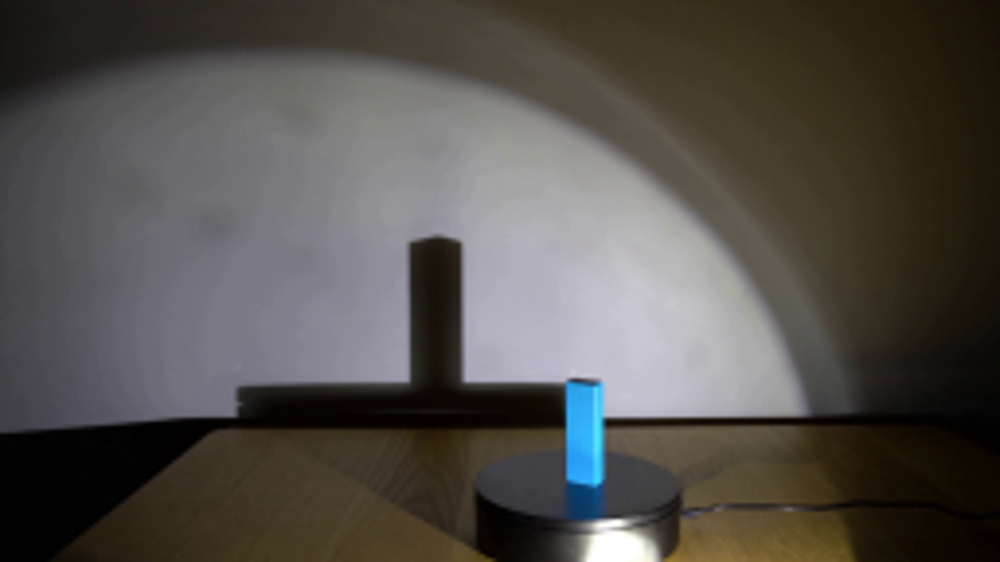
视觉工具实际返回图片 2
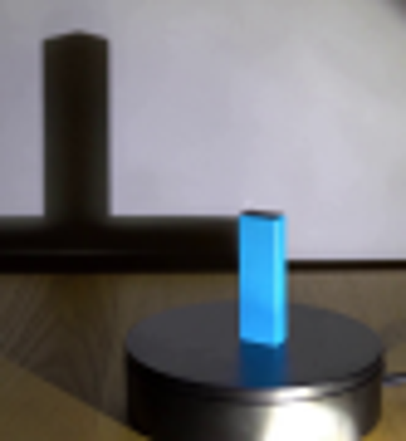
视觉工具实际返回图片 3
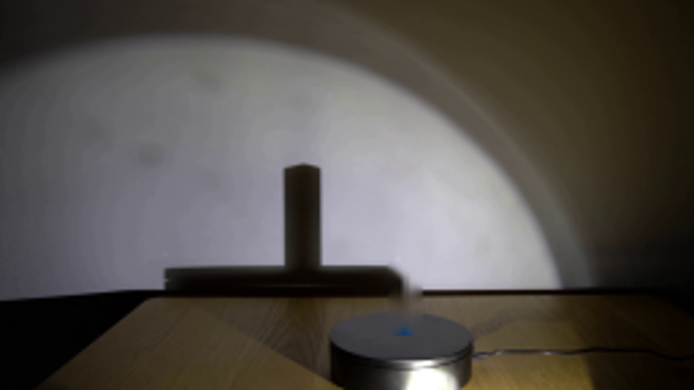
视觉工具实际返回图片 4
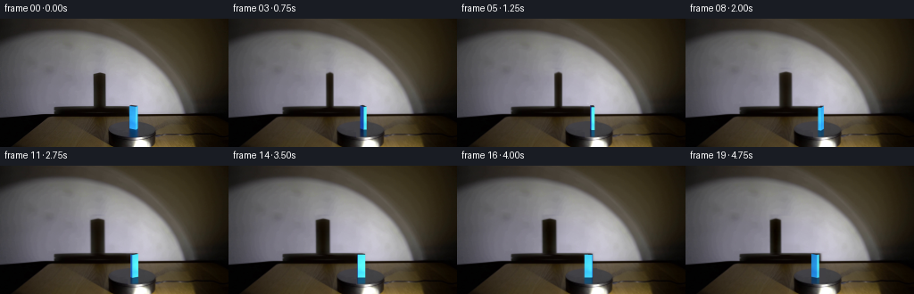
视觉工具实际返回图片 5
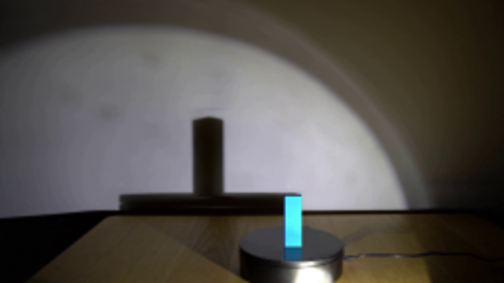
视觉工具实际返回图片 6
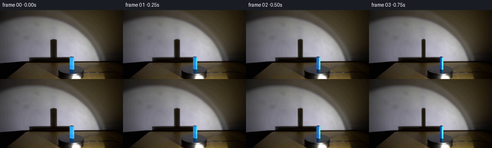
视觉工具实际返回图片 7
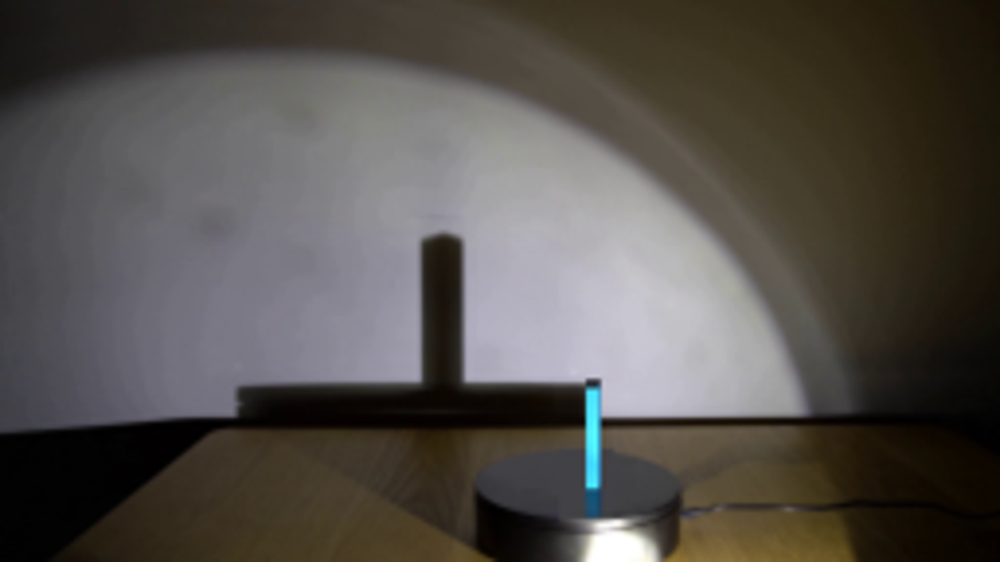
视觉工具实际返回图片 8
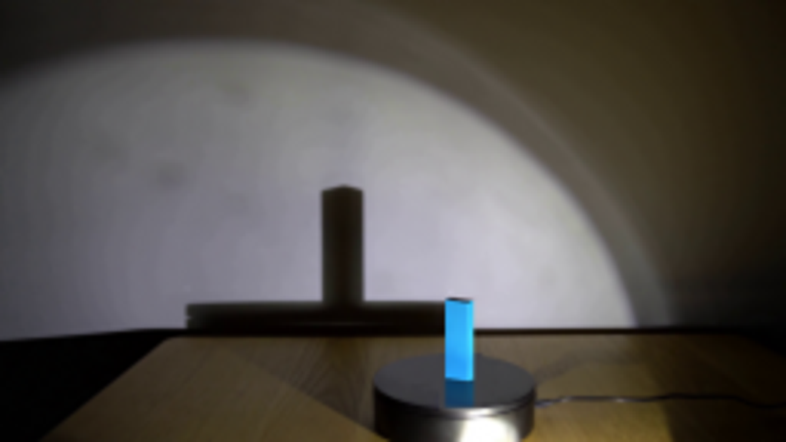
视觉工具实际返回图片 9
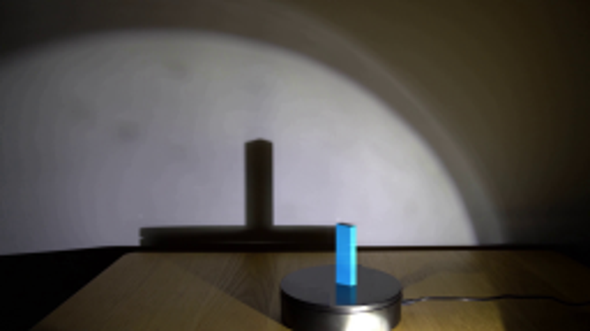
视觉工具实际返回图片 10
保存候选 4 份；完成命令 14 次；可验证图片返回 10 张。原始 API 响应与完整日志保留在本地。